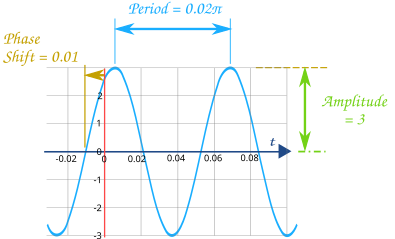
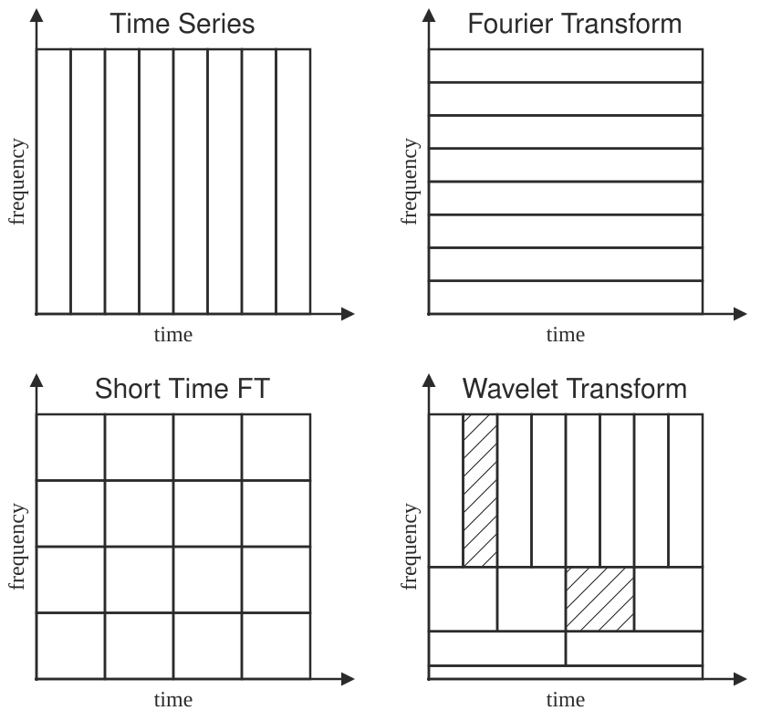
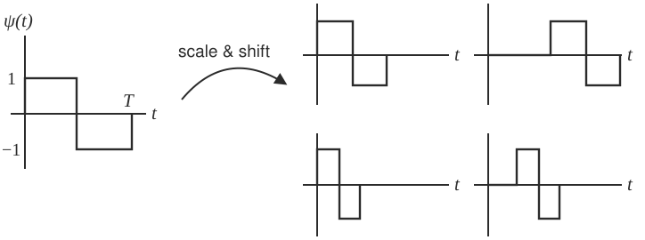
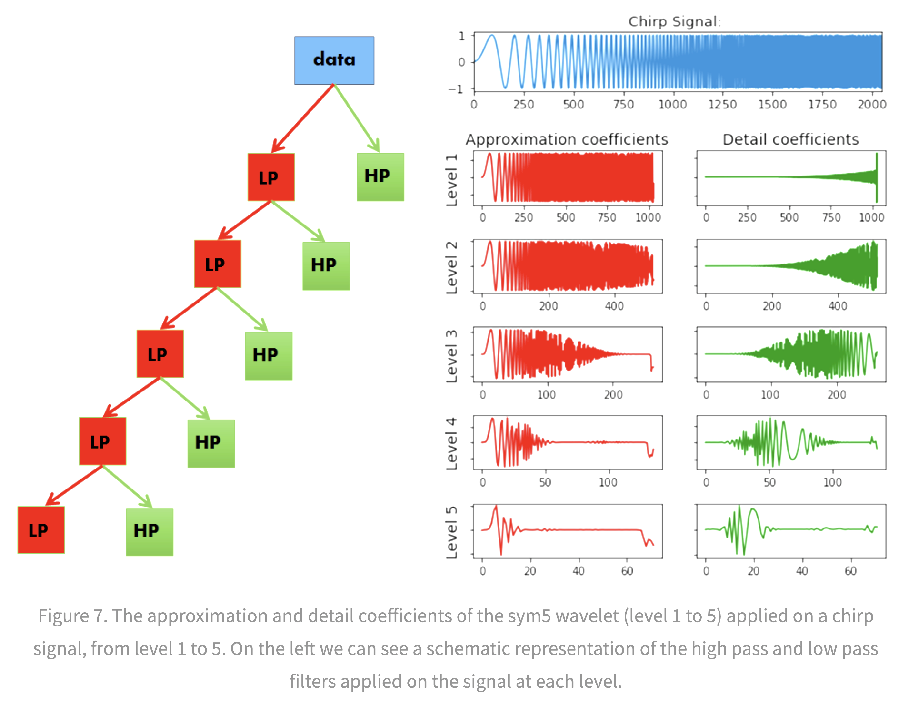
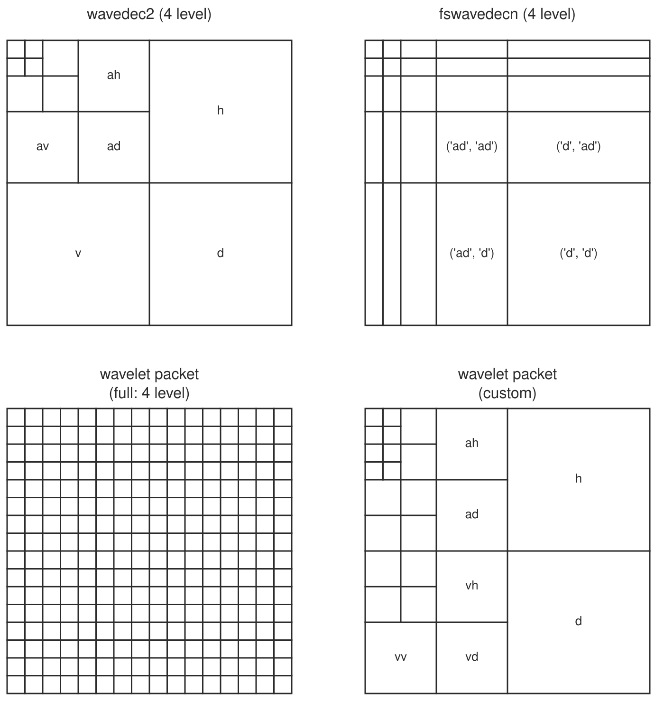

Signal processing#
Some notes on signal processing, mostly fourier and wavelet analysis.
About this chapter
A signal can be studied in time, in frequency, or in both at once. The intro covers sampling and the common filters, and the figure at its end compares how each representation tiles the time-frequency plane. Fourier analysis is the frequency view: the discrete Fourier transform (DFT) writes a sequence as a sum of sinusoids and is computed with the FFT.
Wavelets give up some frequency precision to keep time information. The wavelet sections describe the basis (shifts and dilations of a mother wavelet), common choices such as Haar and Morlet, how the discrete wavelet transform is computed with low-pass and high-pass filters, and what properties (vanishing moments, regularity) separate one wavelet basis from another.
Basics#
dirac-delta infinity at one point, zero everywhere else

Fig. 6 Figure 1. A sinusoid and its parameters: amplitude (here 3), period (\(0.02\pi\)) and phase shift (0.01).#
Intro#
Sampling turns a continuous signal into numbers. Shannon’s statement below is the condition for losing nothing: a signal with no frequencies above \(B\) needs samples at least \(2B\) times per second.
signal can be continuous or discrete based on its domain (not values)
analog signal - continuous in time
sampling - the process of taking individual values of a continuous-time signal
sampling rate \(f_s\) - the number of samples taken per second (Hz)
sampling period - time interval between samples
digital signal - discrete in time and value
”If a function x(t) contains no frequencies higher than B hertz, it is completely determined by giving its ordinates at a series of points spaced 1 2B seconds apart” –Shannon
signals are usually studied in
time-domain (with respect to time)
frequency-domain (with respect to frequency) - use Fourier transform
time-frequency representation (TFR) - use short-time Fourier transform (STFT) or wavelets
harmonic analysis - studies relationship between time and frequency domain
common filters
low-pass filter - pass only low frequencies
high-pass filter - pass only high frequencies
band-pass filter - pass only frequencies within a specified range
band-stop filter - pass only frequences outside a specified range
power spectrum - how much of the signal is at a frequency \(\omega\)? - square of the magnitude of the coefficients of the Fourier coefficients for \(\omega\)


Fig. 7 Figure 2. How each representation tiles the time-frequency plane. The raw time series resolves time but not frequency, the Fourier transform the reverse, and the short-time FT uses a uniform grid. The wavelet transform uses narrow, tall cells at high frequencies and wide, short cells at low frequencies.#
Fourier analysis#
Each DFT coefficient \(X_k\) is the correlation between the signal and one complex sinusoid; its real part comes from the cosine and its imaginary part from the sine.
Fourier analysis - study of way general functions can be represented by Fourier series
Fourier series - periodic function composed of harmonically related sinusoids, combined by a weighted summation
one period of the summation can approximate an arbitrary function in that interval
(continuous) Fourier transform \(\hat f\): time (x) -> frequency (u)
\(\hat{f}(u) = \int_{-\infty}^{\infty} f(x)\ e^{-2\pi i x u}\,dx\)
\(f(x) = \int_{-\infty}^{\infty} \hat f(u)\ e^{2\pi i x u} \,du\)
2-dimensional (good ref)
\(F(u, v) = \int_{-\infty}^{\infty} \int_{-\infty}^{\infty} f(x, y) e^{-i 2 \pi (ux + vy)}\,dx\, dy\)
inverse: \(f(x,y) = \int_{-\infty}^{\infty} \int_{-\infty}^{\infty} F(u, v) e^{i 2 \pi (ux + vy)}\,du\, dv\)
for each basis, magnitude of vector [u, v] is frequency and direction gives orientation
Fourier transform of Gaussian is Gaussian
discrete-time Fourier transform - values are still continuous
\(X_{2\pi}(\omega) = \sum_{n=-\infty}^{\infty} x_n \,e^{-i \omega n}\)
\(\omega\) is frequency
discrete Fourier transform (DFT or the analysis equation) - this is by far the most common
- \[\begin{split}\begin{align}X_k &= \sum_{n=0}^{N-1} \cblue{x_n} \corange{e^{-2\pi i k n / N}}\\&=\sum_{n=0}^{N-1} \cblue{x_n} \left[ \cgreen{\cos(2\pi k \frac n N )} - i \cpink{\sin(2 \pi k \frac n N )}\right]\end{align}\end{split}\]
larger k is higher freq.
inverse transform: \(x_n = \frac{1}{N} \sum_{k=0}^{N-1} X_k\cdot e^{i 2 \pi k n / N}\)
\(x_0, x_1, ... x_{N-1}\)\( is a sequence of N complex numbers (i.e. time domain) and we transform to another sequence of complex numbers \)\(X_0, X_1, ..., X_{N-1}\)
we write \(\mathbf X = \mathcal F (\mathbf x)\)
vectors \(u_k = \left[\left. e^{ \frac{i 2\pi}{N} kn} \;\right\vert \; n=0,1,\ldots,N-1 \right]^\mathsf{T}\) form an orthogonal basis over the set of N-dimensional complex vectors
interpreting units
a frequency of 1/N would correspond to a period of N
use \(2\pi/N\) so that it goes through one cycle with period of N
the n=0 parts correspond to a constant
all other frequencies are integer multiples of the first fundamental frequency
finding coefs: basically want to use the correlation between the signal and the basis element (this is what the summation and muliptlying does)
real part - corresponds to even part of the signal (the cosines)
imaginary part - corresponds to odd parts of the signal
can be quickly computed using the Fast Fourier Transform in \(O(n \log n)\) instead of \(O(n^2)\)
inverse discrete Fourier Transform (IDFT)
windowed fourier transform - chop signal into sections and analyze each section separately
Wavelet analysis#
A sinusoid lasts forever, so a Fourier coefficient says nothing about when a frequency occurs. A wavelet is a short wave: shifting it gives time information and stretching it gives frequency.
wavelet is localized in both time and frequency information
different wavelets thus vary in translation, scale, and sometimes orientation
many choices for wavelet basis, which replaces the sinusoid basis sinusoid \(\phi(x) = e^{i 2 \pi k x/N}\)
Wavelet basics#
Every wavelet basis is built from one mother wavelet \(\phi\) by translations \(b\) and dilations \(a\). The discrete wavelet transform restricts these to powers of 2 and integer shifts; the examples (Haar, Morlet, Mexican hat, Daubechies) differ in the shape of \(\phi\).
\(\phi(x)\) = mother wavelet (or analyzing wavelet)
basis consists of translations and dilations of the mother wavelet \(\phi(\frac{x-\cblue{b}}{\corange{a}})\)
wavelet vocab
discrete wavelet transform: set \(a=2^{-j}, b = k \cdot 2^{-j}\), where \(k\) and \(j\) are integers
starts from multiresolution analysis (mallat, 1989)
continuous wavelet transform: \(a > 0, b\) (still a point-by-point, digita transformation)
orthonormal
biorthogonal - more relaxed, still enables perfect reconstruction
undecimated - highly overparameterized, exists at every location
website to explore different wavelets
ex. Haar wavelet (step function on [0, 1]

Fig. 8 Figure 3. The Haar mother wavelet, \(+1\) on the first half of its interval and \(-1\) on the second, and four scaled and shifted copies: two at the original width and two at half the width.#
define translations and dilations \(\phi_{jk}(x) = \text{const} \cdot \phi(\corange{2^j} x - \cblue{k})\)
j, k are still integers
this is still orthogonal
ex. Gabor==Morlet wavelet: \(\phi_\sigma(x) = c \cdot \cblue{\underbrace{e^{-\frac 1 2 x^2}}_{\text{gaussian window}}} \corange{\underbrace{(e^{i\sigma x} - \kappa_\sigma)}_{\text{frequency}}}\)
ex. Mexican hat wavelet - 2nd deriv of Gaussian pdf (in 2d, called Laplacian of Gaussian)
ex. Daubechies wavelet
ex. coiflet
ex. scattering transform
ex. Mallat’s MRA - stretch/scale wavelets in a smart way to tile space
how are wavelets implemented? (figs taken from blog)
note: Continuous Wavelet Transform, (CWT), and the Discrete Wavelet Transform (DWT), are both, point-by-point, digital, transformations that are easily implemented on a computer
DWT restricts the value of the scale and translation of the wavelets (e.g. scale must increase in powers of 2 and translation must be integer)

Fig. 9 Figure 4. The discrete wavelet transform of a chirp, a sinusoid whose frequency rises over time. Left: each level splits the previous low-pass (LP) output into a new low-pass and a high-pass (HP) part. Right: the approximation (low-pass) and detail (high-pass) coefficients for levels 1 to 5. The fast end of the chirp shows up in the first levels’ details, the slow start only at the deepest levels.#
The approximation coefficients represent the output of the low pass filter (averaging filter) of the DWT.
The detail coefficients represent the output of the high pass filter (difference filter) of the DWT
pywt 2d can decompose in different ways

Fig. 10 Figure 5. Ways to lay out a 2-D wavelet decomposition in pywt: the standard dyadic pyramid, a fully separable decomposition, and full and custom wavelet packets, which also split the detail bands.#
wavelet packet uses linear combinations of wavelets


Properties of different wavelet bases#
What separates one basis from another. More vanishing moments give a smoother, more complex wavelet with longer support, and inverting the transform needs a wavelet with zero mean.
vanishing moments
higher number of vanishing moments = more complex wavelet
more accurate repr. of complex signal
longer support
p vanishing moments => polynomials up to pth order will not be identified
regularity
more vanishing moments = higher regularity
low regularity - more jagged wavelets, less smooth reconstructions
invertibility
requires admissibility condition, which at least requires wavelets have vanishing mean \(\int \psi(x) \mathrm{d} x=0\)
Wavelet analysis#
orthogonal wavelet basis: \(\phi_{(s,l)} (x) = 2^{-s/2} \phi (2^{-s} x-l)\)
scaling function \(W(x) = \sum_{k=-1}^{N-2} (-1)^k c_{k+1} \phi (2x+k)\) where \(\sum_{k=0,N-1} c_k=2, \: \sum_{k=0}^{N-1} c_k c_{k+2l} = 2 \delta_{l,0}\)
one pattern of coefficients is smoothing and another brings out detail = called quadrature mirror filter pair
there is also a fast discrete wavelet transform (Mallat)
basis of adapted waveform - best basis function for a given signal representation
differential operator and capable of being tuned to act at any desired scale
More general wavelets#
Extensions of the wavelet idea: generalized Daubechies and coiflet families, shearlets and curvelets for anisotropic features, and wavelets learned from data.
Wavelet families of increasing order in arbitrary dimensions
Parametrizing smooth compactly supported wavelets
just for daubuchet
shearlets - extension of wavelets for finding anisotropic features
constructed by parabolic scaling, shearing, and translation applied to a few generating functions
allows for things like stretching an ellipsoid in one direction rather than always having the same size
curvelets - degree of localisation in orientation varies with scale. In particular, fine-scale basis functions are long ridges
modern works even learn wavelets, e.g. AWD
Key ideas
A signal with no frequencies above \(B\) is determined by samples taken at least \(2B\) times per second; sampling slower aliases high frequencies onto low ones.
Each DFT coefficient \(X_k\) is the correlation between the signal and one complex sinusoid, and the sinusoids form an orthogonal basis.
The FFT computes the DFT in \(O(n \log n)\) instead of \(O(n^2)\).
Fourier coefficients have no time information; wavelets, shifted and stretched copies of one mother wavelet, are localized in both time and frequency.
The discrete wavelet transform repeatedly splits a signal into low-pass approximation and high-pass detail coefficients.